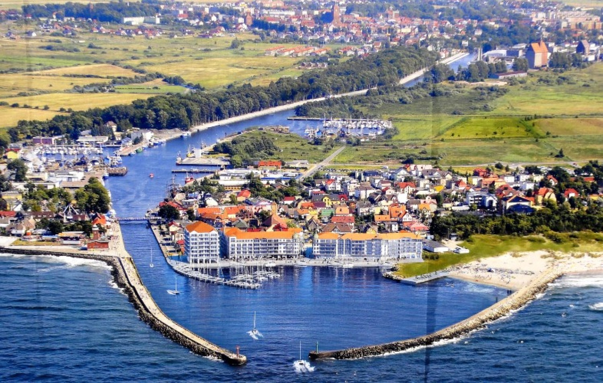

Województwo pomorskie to region, w którym spotykają się piękne plaże Bałtyku, malownicze jeziora i bogata historia. Turyści mogą odpoczywać nad morzem, zwiedzać urokliwe nadmorskie miejscowości oraz odkrywać zabytki Gdańska, Gdyni i Sopotu. Region oferuje także liczne szlaki rowerowe, rezerwaty przyrody oraz wyjątkowe krajobrazy Kaszub.
Województwo zachodniopomorskie zachwyca szerokimi plażami, nadmorskimi kurortami i licznymi atrakcjami przyrodniczymi. Region słynie z popularnych miejscowości wypoczynkowych, takich jak Świnoujście, Międzyzdroje czy Kołobrzeg. Oprócz wypoczynku nad morzem turyści mogą korzystać z rejsów, tras rowerowych oraz zwiedzać malownicze wyspy i parki narodowe.
